| 『丸く正しい商いを』愛され続けるスーパー「丸正」の 100年 1巻――夢を諦めるな | |
| 飯塚 司郎 | |
| 株式会社 ダイヤモンド・ビジネス企画 (2019) | |
この本は縦書きでレイアウトされています。
また、ご覧になる機種により、表示の差が認められることがあります。
本作品を電子書籍版に収録するにあたり、一部の漢字が簡略体で表記されている場合があります。
当社の創業者であり、私の祖父でもある飯塚正兵衛が、東京・四谷で青果物小売業を開業したのが、一九一九（大正八）年一二月のことだった。それから明年で一〇〇年となる。
埼玉県鴻巣の貧乏農家に生まれ、貧しさゆえの苦労を嫌というほど味わってきた正兵衛が、商人として一旗揚げるという志ひとつを抱いて、東京に出てきたのが二〇歳の頃。それから、休むことなく必死に働き続け、丸正は成長し続けてきた。気がつけば、掘っ立て小屋のようだった小さな八百屋は、多くのチェーン加盟店を持つ、スーパーマーケットのボランタリーチェーンへと成長した。
その背景には、時代を先読みする創業者の先見性と、現場で叩 き上げてきた商いの哲学がある。
先見性ということでいえば、多くの八百屋が野菜だけを取り扱うことに満足していた時代に、肉や魚なども販売する総合食料品店化へと舵 を切った。さらに、今では当たり前となっているスーパーマーケットという業態にもいち早く取り組んだ。こうした時代の変化をキャッチし、それに対応する能力があったからこそ、時代を生き残り、成長し続けてきたのだと思う。
そして、大事なことは、こうした最先端の思考とは真逆のようにも見える商い哲学を徹底して磨き抜き、現場に活かしてきたことだ。それは、資金も人脈も学歴も何もない中で商売をゼロから始め、多くの辛酸をなめながら獲得した生きた哲学なのだ。
そこには、人としての王道を教えたものが多い。例えば、取引先に対して、上から目線の偉そうな態度でも取ろうものなら、「お前もずいぶんと偉くなったものだな」と、厳しく叱責 された。それは、お客さまはもちろんだが、いい商品を売ってくれる取引先がいるからこそ商売ができるのだ、という普遍の教えだった。
また、多くの人に助けられ、支えられてきた創業者は、「商売は信用が大事だ」ということを身に染みてわかっていた。それゆえに、義理をとおすことや約束を守ることの大切さを、繰り返し教えてきた。
また、人間と商売を滅ぼす欲の怖さも知っていたので、「人もよかれ、我もよかれ、我は人よりちょっとよかれで我慢しろ」と、身の丈に合った絶妙な生き方の匙 加減も教えてくれた。
後継者育成については、特に厳しい人だった。「バカなせがれは、火事より怖い」ということで、その育成については甘やかしを絶対に許さなかった。それがあったからこそ、二代目も、三代目の私も、道を外れることなく、商売の王道を歩んでこられたように思う。
丸正の独特の商売のやり方の一つとして、のれん分けがある。時代にそぐわない部分もあるので今でこそ数は減ったが、創業者は、たくさんの従業員の独立を後押ししてきた。一人でやっていけると判断した従業員に対しては、資金面でも商売のノウハウ面でも惜しむことなく手助けしながら、独り立ちを応援してきたのだ。それが、現在のボランタリーチェーンの礎となっている。
その背景には、同じ釜の飯を食い、苦労して一生懸命仕事をしてくれる従業員に対する創業者の親心があった。創業者自身がまさにそうであったように、誰だってできることなら一国一城の主になりたい、そう思っている。ならば、頑張って働いてきた従業員には、その夢を叶えさせてやりたい。それが創業者の率直な気持ちだったし、また、そうして元従業員が活躍する姿を見ること自体が創業者自身の喜びでもあったのだ。
従業員は、私たちに対して、社長や会長という呼び方をしない。社長夫婦は、「おやじさん」と「おかみさん」。社長の息子夫婦は、「兄さん」と「姉さん」と呼ぶ。創業からの伝統である。
まさに、丸正は、ファミリーなのである。それこそが、当社の強みにもなっている。
小売業界は、時代の変遷とともに、その様相をどんどん変えてきた。当社も八百屋から、総合食料品店へ、そしてスーパーマーケットへと変化してきた。そして今は、コンビニエンスストア全盛の時代で、さらにそこにインターネットによる販売が加わってきた。時代の変化を見逃し、その対応を怠れば、どんな商売でも取り残される。
けれども、どんな時代になったとしても、商売人としての哲学は変わらない。環境は変わっても人間の本質というものがそれほど変わらないのと同じように、商売人に必要な心得もそう変わるはずがないのだ。それはつまり、丸正に連綿と流れてきた、創業者の商いの哲学である。
創業一〇〇周年を迎えるに当たって、私たちは、そのことを深く肝に銘じたい。そして、これまで当社を支えてくださったお客さま、取引業者さま、そして従業員に感謝しながら、新たな時代への船出をしたいと思う。
二〇一八（平成三〇）年 夏
丸正チェーン商事株式会社 代表取締役社長 飯塚司郎
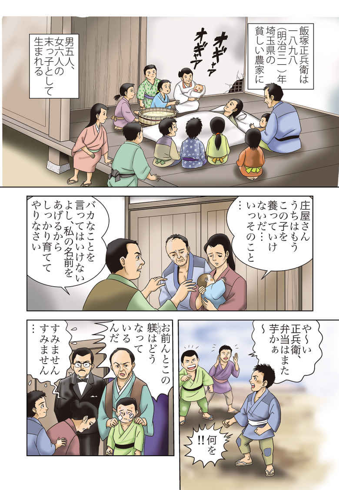
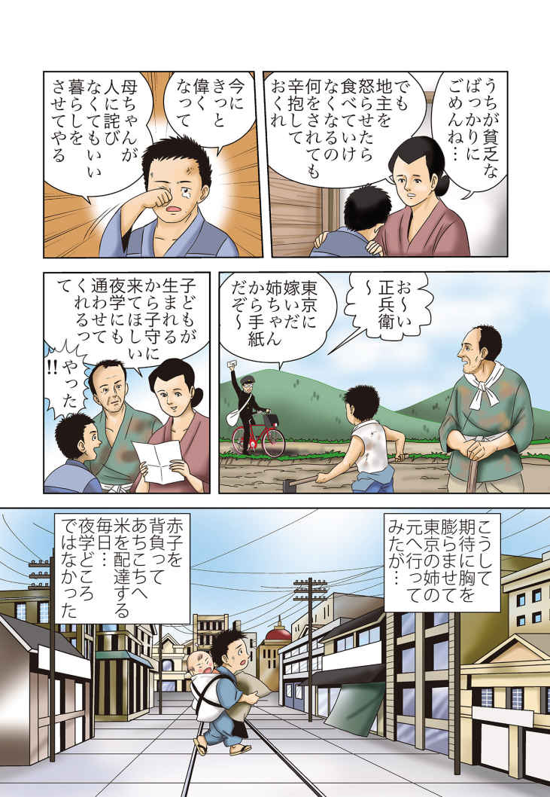
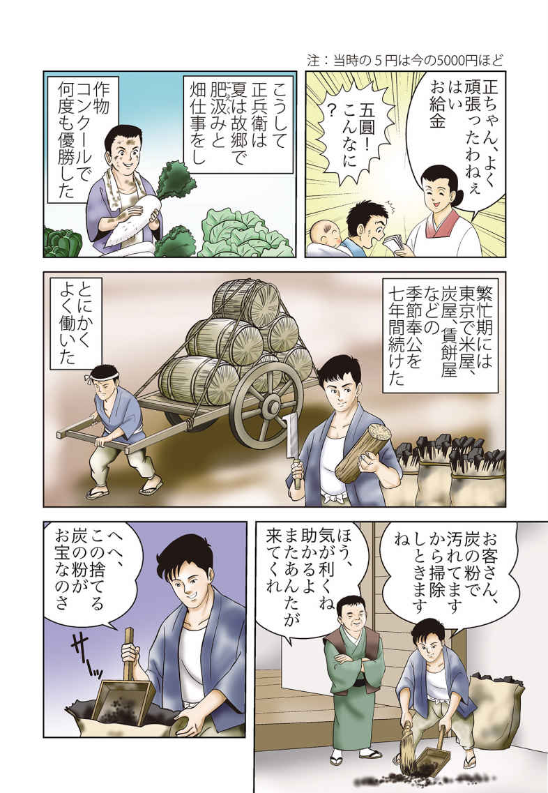
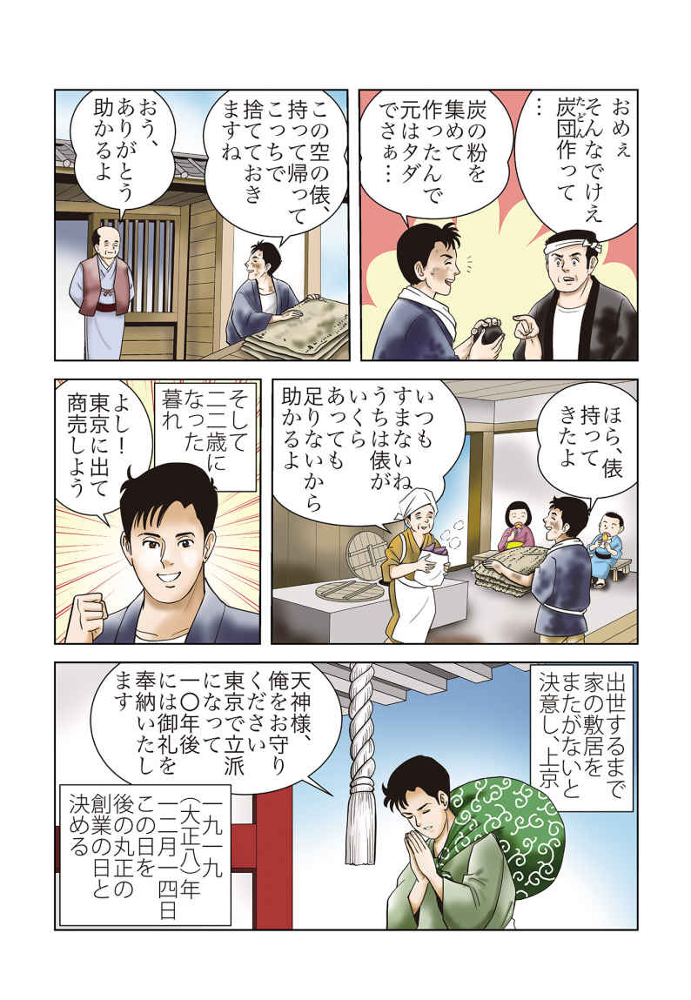
埼玉県北足立郡に生まれた創業者・飯塚正兵衛の家は、食べるものにも事欠 くほど貧しかった。
耕す田畑は四町歩 五反（四万四五五〇㎡、東京ドーム約一個分の広さ）もありながら、小作農の悲しさか、収穫の半分から六割は年貢で取り上げられ、生活は常に逼迫 する状況だった。
正兵衛の記憶では、米の飯だけでものを食べた記憶はない。麦八割に米二割。総菜はたくあん漬けか菜漬けで、魚にいたっては年に二、三度、特別な日だけに鰯 か秋刀魚 の類いをいただく。
もちろん学校の弁当に、白米を持っていけるはずもない。子どもは残酷で、麦飯の弁当を開くと一斉に周りの友だちからバカにされるので、正兵衛はいつも学校の庭の片隅で一人で隠れて食べていた。
食べるものがある日はまだいい。ない日は校庭の片隅で時間を潰し、さも食べてきたようなそぶりで午後の授業に臨むのだ。
飯塚家の貧しさを物語る話には枚挙にいとまがないが、後年、母親が正兵衛に涙ながらに告白した次のような話からは、貧しさのもつ悪さえ窺 える――。
末っ子だった正兵衛と長兄の年の差は一八歳。長兄は一八歳で結婚し、すぐに妻が妊娠。つまり、長兄の子は、正兵衛とほぼ同時期に出生予定だったわけだ。
初子として歓迎を受けた長兄の子どもに対して、恥かきっ子として生まれてきた正兵衛。しかも、食いぶちがさらに増えるということは、それだけ貧しさに拍車がかかることになる。
そうした背景があったため、正兵衛の母親は、当時、堕胎薬として使われていた鬼灯 の根を煎じて飲んでいた。それが原因かどうかはわからないが、正兵衛は七カ月の未熟児として生まれた。すぐに死ぬだろうということで、しばらくの間は名前さえもつけてもらえなかった。
後年、母親は、このことについて正兵衛に、涙を流しながらに言ったという。
「貧乏ほど恐ろしいもんはないよ。どこの国に子どものかわいくない親があろうかね。（中略）お前らは、一銭のゼニでも大切にして、母ちゃんみたいな、悪い親になっちゃいけないよ」
正兵衛には、向学の志があったものの、家の農作業を手伝うために、その道を断念した。
だが、その頃、東京の米屋に嫁いでいた姉から、「子どもが生まれるので、子守の手伝いをしに来てほしい」という知らせが飛び込んできた。
魅力だったのは、夜学に通わせてもらえるという条件だ。幸い、冬は農作業が少ない。正兵衛は、学べる喜びと、憧れの東京で生活できる嬉 しさに、躊躇 することなく、一四歳の冬に上京した。
米屋の配達の手伝いと子守で、毎日休む暇もなく走り続けた。赤子を背中からおろすと、背中がおしっこでずぶ濡 れだった。結局、夜学に通う時間などなく、それは夢で終わってしまったが、その代わり毎月月末になると、姉が手当として五円をくれた。それは正兵衛が初めて手にした給料だった。あまりの嬉しさに、天から授かった宝物のように思えたという。
だが、翌年の四月になると、正兵衛は長兄に呼び戻された。田舎で農作業を手伝うためである。
戻ってきた正兵衛に長兄が聞いた。
「東京でいくら稼いだ」
「三五円」
「じゃあ、三三円だけよこせ。二円はお前の小遣いにやろう」
当時の長兄は、封建時代の名残で、家の中では絶対的な権力を握っていた。正兵衛は、三三円を長兄に渡し、残りの二円を大切にしまった。それは、冬に再び東京に季節奉公に出る時の汽車賃と小遣いにするためだった。
冬は季節奉公として東京で働き、農家の忙しい時期は田舎に戻って無報酬で田圃 や畑で働く。その後、この生活は、家を出るまで長く続いたのである。
百姓仕事で辛かったのは、肥汲みだった。今のような化学肥料のない時代、作物を豊かに育てるためには糞尿が欠かせない肥料だったため、糞尿の売買が行なわれていた。その仕事を担っていたのは、もちろん正兵衛だった。
洗濯水で薄めた糞尿を高く売りつけようとする強欲婆さんと交渉しながら、少しでも安く買い取って自宅まで運ぶのだが、百貫（三七五㎏）を超す糞尿を載せた荷車を引いていくのは大変だった。
臭いも強烈で、道路沿いの家々は窓や戸を閉め、あるいは火鉢に醤油 をこぼして臭気を払おうとする。
ある夏の日、肥樽を積んだ荷車を引いていると、向こうから三人の娘が歩いてきた。それは小学校時代の同級生だった。小地主や自作農の、比較的裕福な家の娘たちで、風呂敷包みを抱えて習い事にでも行く様子であった。
正兵衛は挨拶をしようと思いつつ歩いていくと、彼女たちは一五ｍほど先で、急に顔を背けて鼻をつまむと、走りながら正兵衛の傍らを通り抜けていったのである。屈辱だった。いくら臭いとはいえ、一五ｍも離れていてそれほど強い臭いがするはずがない。しかも、彼女たちは、都会っ子などではなく、同じ土地に育った農家の娘たちなのだ。
「俺だって、好きで肥汲みしているんじゃない！」
この屈辱は、正兵衛になおさら東京への憧れを強くした。
もちろん、田舎での生活は辛いことばかりではなかった。農村の若者にとっての大きな楽しみは、夏の盆踊りだった。若い男女が遅い時間まで踊り狂う夏の夜は、一年の憂さを一気に晴らす喜びだった。
そんなとき、正兵衛は、得意げになって、冬に季節奉公で働く東京の様子を、友だちに語って聞かせるのである。当時は東京に行く機会などほとんどなく、それは夢物語のような憧れの場所だったのだ。
「東京はな、市内電車ってのが走っているんだ。広い道路の真ん中をよ、チンチン鳴らしながら走るんだ」
娘たちは目を輝かして、いまだ見たことのない東京の話に耳を傾けた。
「俺もな、兵役検査が終わったら、東京に出てよ、商人になって一旗揚げるんだ。こんな田舎にくすぶって、肥汲みじゃ終わらねえよ」
とはいっても、当時の農家にとって働き手が減るということはまさに死活問題だった。それまでも、次兄、三兄、四兄、正兵衛と、次から次へとタダで働かせ、何とか生計を保ってきた実家である。
最後の働き手である正兵衛が上京するということは、長兄にとっては代々続いてきた農家の廃業の危機となるわけで、何としてでも阻止したい話だったのだ。
正兵衛自身も悩んだ。家は大切だったが、一生涯、冬は東京で季節奉公し、それ以外は田圃や畑で働く生活を続けても家の発展は見込めなかったし、自分自身の夢も描けなかった。
正兵衛は東京へ出る決心をし、そのことを長兄に告げた。
「俺は、東京に行くことにした」
「冗談じゃねえ。今、お前に出て行かれてどうするんだ」
二人の溝は深かった。翌日には、長兄の頼みで、親戚や近所の人たち三、四人が説得にやってきた。
険悪な空気の中で、話は決裂した。正兵衛の決意は固かったし、長兄の許しも得られなかった。その長兄が、最後に吐き捨てるようにこう言った。
「もう、二度とこの家の敷居をまたぐなよ」
家を背にしたときの正兵衛の荷物は、小さな柳行李 一つだけだった。
その足の向かうところは、駅ではなく、集落の鎮守様である出生塚神社だった。そこは、正兵衛が小さい頃よく遊びに来た神社であり、青年期に達してからも悲しいときや苦しいときに詣でた懐かしい場所である。社殿の前に佇 んで正兵衛はこう願 をかけた。
――天神様、俺を守ってくだせえ。これから東京に行くけんど、きっと立派になって、一〇年たったら御礼を奉納しやすから――
正兵衛は意を決して、そして胸を張って、駅へと向かった。心の中は晴れやかだった。
――俺は、もう兄の束縛から解放されたんだ。何をしても文句を言われる筋合いはないし、どんなに儲 けても、それは皆自分の財産になるのだ――
駅員に言った。
「上野一枚」
「七五銭」
手元にあった全財産は三円だったから、切符を買えば残りは二円二五銭である。あまりの心細さに、現実の厳しさを教えられるような気がしたが、もう後には引き返せない。正兵衛は、上野行きの汽車に一人乗り込んだ。
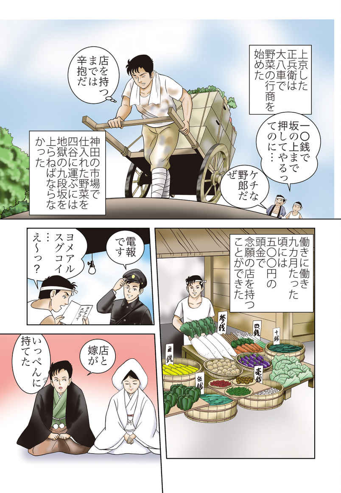
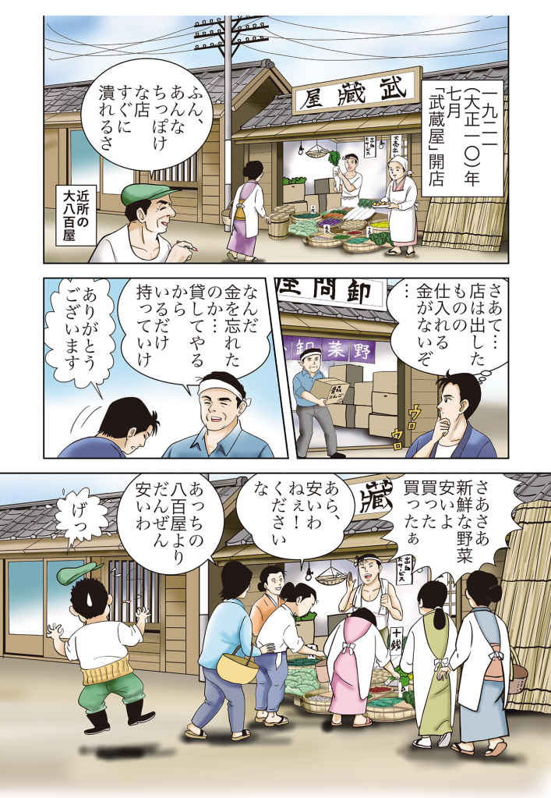
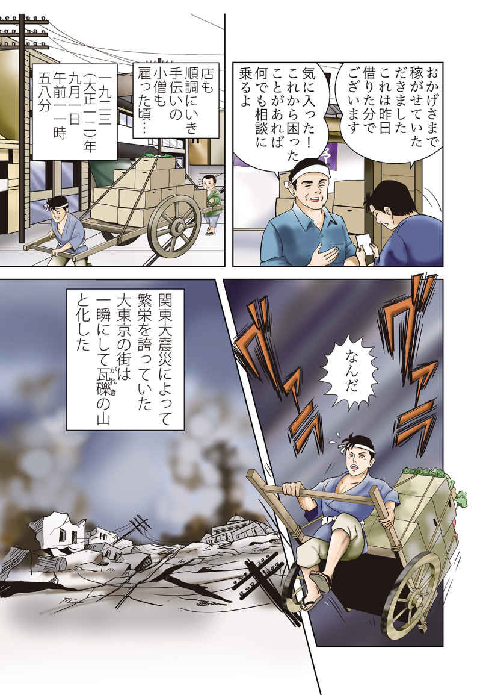
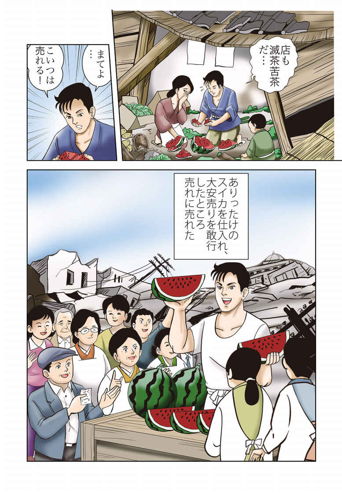
正兵衛が上野駅に到着したのは、一四歳の時に初めて上京してからこれで八回目となるのだが、激しく行き交う雑踏を眺めているとそれまでには経験したことのなかった不安が湧きあがってきた。手元に残ったわずかな金と、何の約束もない茫漠 たる未来に、身がすくんだのである。
最初に訪ねたのは米屋の姉の家だった。不幸にも、夫に先立たれた姉は、年末の賃 餅 の注文でてんてこ舞いの状態で、正兵衛の来訪を喜び、幾許 かの小遣いをくれた。
年が明けると、今度は炭屋を営む兄がやってきて、繁忙期の二、三カ月間の手伝いを請 われた。こうして、兄と姉に助けられながら、東京での生活が始まった。
四月のある日、母と叔母が成田山詣の帰りに訪ねてきて、こう言った。
「長兄が底まめを悪くして田圃 に入れずに困っているから、何とか帰ってきてくれないか」
苦労をしてきた母の頼みに心が動いた正兵衛は、しぶしぶ田舎に帰ったのだが、兄はまったく元気で仕事をしていた。騙されたのである。腹は立ったが、せっかく帰省したのだからということで、田植えをすませ、草取りも行なった。いざ東京に戻るという時に、三カ月分の手当のつもりで、「すこしばかりゼニ貸してくんねぇか」と長兄に頭を下げたが、長兄は「ゼニはねえよ」と捨てばちに言った。
上京の支度にとりかかった正兵衛の胸には、こんな思いが渦巻いていた。
「人間生まれるときは一人ぼっちだし、死んでいく時も一人ぼっちだ。なのに、周囲の人間を頼るのは、甘えた性根だ。これではとても独立などできない。もう、人を頼りにすることは絶対にしまい」と。
再び上京した正兵衛は、自ら商売を始めようと考え、炭屋の兄のすぐ下の兄の家に行った。この兄は、東京の三大貧民窟といわれた四谷鮫河橋 の片隅で、名ばかりの八百屋を営んでいたのだが、その兄に仕入れの面倒だけでも見てもらおうと思ったのだ。
住む場所は提供されなかったものの、さまざまな支援をしてくれた。その支援のおかげで、正兵衛は、稼いで貯めていたわずかの金で野菜と秤 を入れる籠を購入し、一日一五銭で大八車を借りることができるようになった。住む場所は、近くにあった、葬儀の際に棺を担ぐ人足の家だった。
こうして、一九二一（大正一〇）年七月三日、正兵衛は、ついに行商八百屋を開業したのである。二三歳の時だった。
毎朝、煎餅布団から起き上がる正兵衛の胸に悲哀はなかった。自らの手で自らの未来を切り開く一日が始まると思うと、毎日が充実感でいっぱいだった。
仕事は早朝から始まった。まずは、中野方面へと向かい、農家から直接野菜を仕入れ、その野菜を四谷通りの民家一軒一軒に、「買ってくんねぇか」と声をかけながら売りさばくのである。市場を通っていないから格安になっている野菜を、奥さんたちは喜んで買ってくれた。
一仕事終わると、次は、神田の市場まで仕入れに行き、再び四谷に戻って売りさばいた。その際どうしても九段の坂を通らなければならない。そこには、軽子 と呼ばれる荷車の後押しをする者がいるのだが、正兵衛は一切彼らの手を借りず、歯を食いしばりながら一人で急な坂を上った。
「たった一〇銭だ」と言いながら軽子たちが近寄ってきたが、そんな時、正兵衛は決まって、「俺にゃあ、一〇銭が惜しいんだ」と言った。
いつか自分の店を持つという夢の達成のためには、一〇銭であろうと無駄な浪費に思えたのである。
大八車が到着したエリアは、四谷の若葉一丁目のお屋敷町だった。なぜこの場所を選んだかというと、そこには正兵衛が季節労働者として米屋や炭屋で働いていた時のお得意さまがたくさんいて、しかも、正兵衛の真面目で一生懸命な働きぶりに好感を抱いてくれていたお客さまが多くいたからだ。事実、正兵衛が商売を始めたことを知った得意先の主人たちは、「正兵衛が八百屋を始めたから、ひいきにしてやってくれ」と、新たな得意先を紹介してくれたのである。
こうして、行商を始めた当初から、この地域の人たちは正兵衛の上得意となってくれたのである。
野菜を売り切って帰るのは、夜の八時頃だった。しかも、さらにその後、正兵衛は、大木戸の夕市 と呼ばれる市場に出向き、ナスや大根やキュウリの漬物を仕入れ、通りを歩く人たちに対して、こう売り込むのである。
「明日の総菜にどうだね。手間がかからず寝坊ができるよ」と。
こうして連日、朝は六時から夜は一二時過ぎまで働き続けたのだった。
おかげで、行商を始めてから九カ月ほどたった頃には、五〇〇円程度の貯蓄ができていた。
その頃、一つのチャンスが訪れた。炭屋をしていた兄が、不況を乗り切るために、店舗を半分に詰めて、あとの半分を他人に貸そうと考えたのだ。間口二間（約三・六ｍ）、奥行二間の店舗に、四畳半一間がつき、二階は六畳。居住権が七〇〇円、その他に敷金が必要で、造作は借家人もち。
「それ、俺に貸してくれないか」と言ってきた正兵衛に対して、兄は「いつの間にそんなに貯めたんだ」と驚いた。
ただ、居住権の七〇〇円はない。五〇〇円を支払って、あとは分割払いということで交渉は成立した。さらに、二階に間借りしていた大工に頼んで、古い蜜柑 箱などを使って棚を作ってもらうことにした。
同じ頃、故郷の叔母から電報が届いた。「ヨメアル スグコイ」。縁談話が持ち上がったのである。話はとんとん拍子に進んでいき、婚約が成立した。当時の心境を、正兵衛はその著書にこう語っている。
「私は、これほど純で清い娘御を、貧乏神との戦いに道連れにするのは心苦しいと思った。それと同時に、私のような貧乏人と知っていて、共に苦労してくれる人なら、それで十分、ありがたすぎると思った」と。
店の開店準備も進み、いよいよ引っ越しをするという日、正兵衛は長屋の入り口にある団子屋のおばさんに挨拶した。
「おばさん、長いことお世話になりました」
「いよいよ引っ越しかい。偉いね、お前さんは。それにしても、わたしゃ正さんには驚かされたよ。だって、稼ぐばかりで、金の使い方を知らないからさ。私の家の前を九カ月も毎日通っていながら、ダンゴ一本買ってくれなかったもの」
「ごめんよ。おりゃ、ダンゴ一本食う前に、どうしても店を持ちたかったんだよ」
おばさんは笑いながら、「体に気をつけてね」と激励してくれた。
大八車を引いて、店舗兼住居となる市ヶ谷町に到着すると、兄や姉たちが待ってくれていた。
姉は、結婚祝いとして卓袱台 を買ってくれ、兄二人は共同で商売道具の大八車を注文してくれた。さらに、馴染 みの問屋からは、開店ビラが一枚届けられていた。
店舗の上に掲げられた、「武蔵屋」という屋号の看板が目に染みた。開店ビラを張りながら、正兵衛は心の中で叫んだ。
「とうとう店が持てたんだ。小さな店でも、とにかく自分の城を持てたんだ」
正兵衛は、節くれ立った武骨な手で、頰を伝う熱いものをぬぐった。
新婚生活は貧乏との戦いだった。風呂に行くのがもったいなくて、共同水道で体を洗っていた。新妻にとっては恥ずかしさと冷たさで大変なことだったが、「商売を大きくしましょう」と理解を示してくれた。二人の子どもを亡くすなど、辛い出来事もあったけれども、正兵衛たちは、休む暇を惜しんで働き続けた。
そんな中、一九二三（大正一二）年九月一日、関東大震災が勃発した。正兵衛はちょうど東洋市場で仕入れを終え、大八車を引きながら淀橋 のガード下を家に向かって歩いている途中であった。突きあげるような衝撃と不気味な音が響いてきた。揺れが収まると、世界は一変。町は瓦礫 の山となり、家族を救おうと崩壊した家屋に潜り込み叫ぶ人がいた。やがて、神田方面からは黒煙が上がり始め、それはたちまち広がった。死者と行方不明者は一〇万六〇〇〇人。
幸い、正兵衛の家も家族も無事だった。店の中には売れ残ったスイカが崩れて散乱しており、中には割れて赤い中身をさらしている物も多かった。正兵衛は、この売れ残ったスイカを切り売りするために、一旦は閉めた店を開いたのだが、水分と食べ物の確保として最適だったのだろう、驚くほどの勢いで売れたのだ。
正兵衛は、東洋市場へと走った。そこにもスイカが散乱しており、それをすべて買い取った。さらに、その足で、中野の沼袋へと走り、あるだけのたくあんを購入した。非常時には、梅干しと共に貴重な総菜になると考えたからである。行ってみると、うらなりカボチャが山のようにあり、べらぼうに安い値段で買い取った。
こうして、震災後数日間は、寝る間もないほどの多忙な日々となり、大きな収益をもたらしたのである。当時の心境を、正兵衛は著書の中でこう述べている。
「私は商人であり、商人が商売のために生命を落とすのは、軍人が戦死するのと同じだという気持ちから、（震災の中でも）商売を続けたのであった」
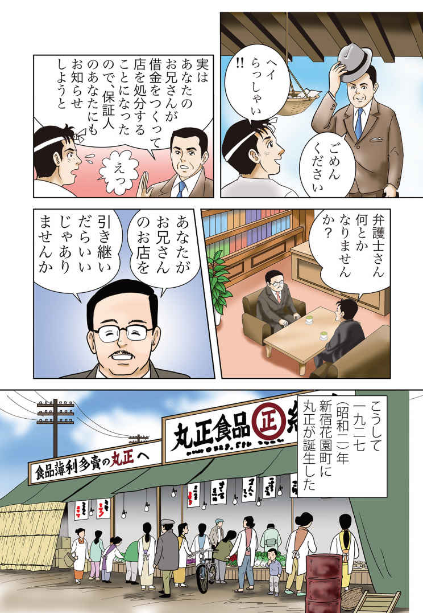
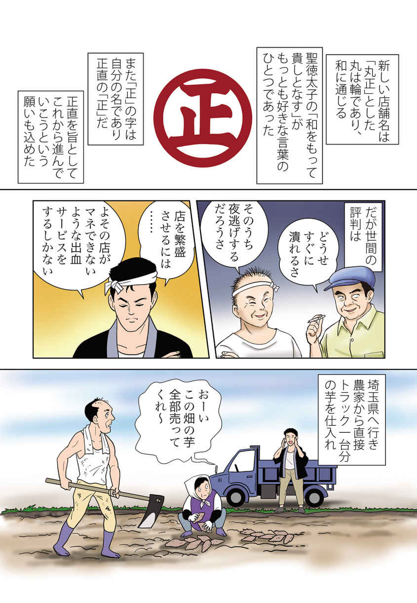
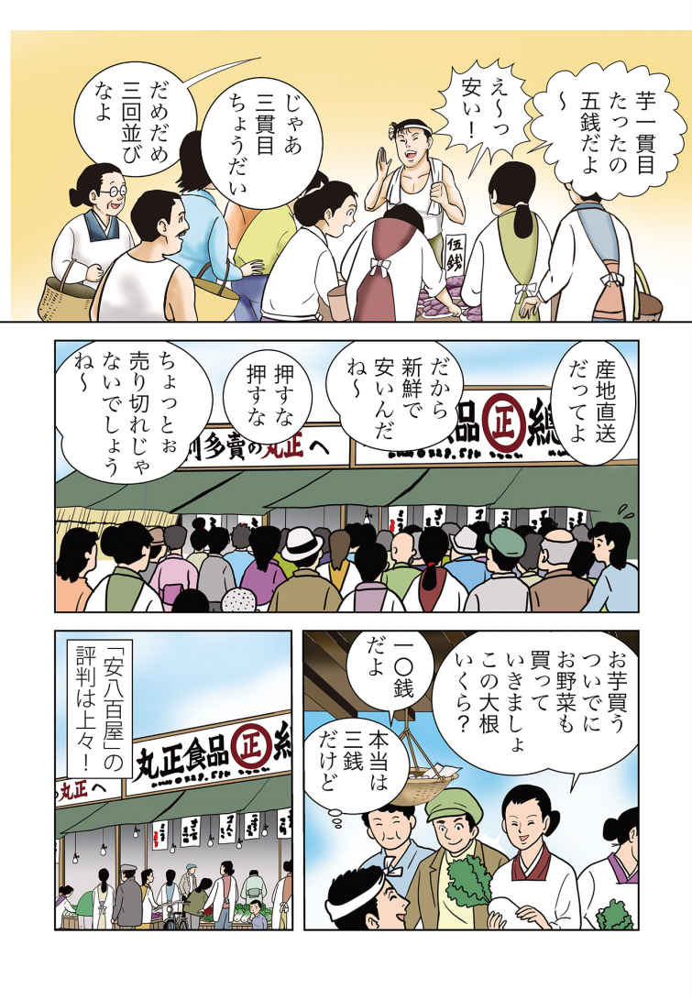
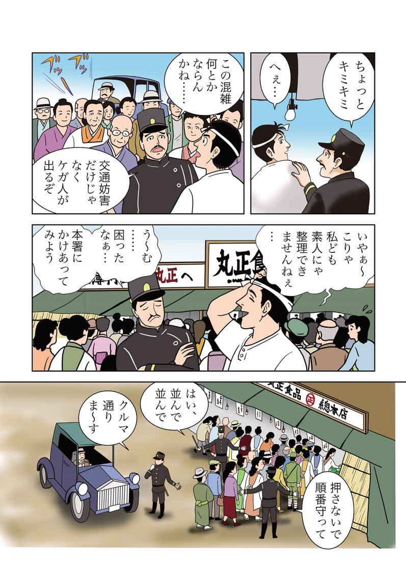
一九二七（昭和二）年に昭和金融恐慌が起きた。休業した銀行は三六行に及び、日銀債の印刷は間に合わず片面刷りの粗末な二百円札が発行されるという騒ぎにまで発展した。
こうした厳しい経済状況の中で、正兵衛は、新しい店舗を新宿花園町にオープンした。間口二間半、奥行三間の角店であった。
実はこの店、同じく八百屋を営んでいた兄が潰してしまった店だった。詳細は省くが、ある程度の成功を収めた兄が、近くの花街のある女性に入れ込んで散財した揚げ句の結果である。
屋号は、「丸正」と決めた。その名には正兵衛の思いが込められていた。小学校の歴史で習った聖徳太子の「和をもって貴しとなす」という言葉は、正兵衛のもっとも好きな言葉の一つだったが、「丸」は「輪」であり、そしてその「わ」という発音は「和」にも繫がる。また、「正」は、正兵衛の名前でもあり、正直の「正」でもあった。周りの人々と仲良く、そして正直を旨として進んでいきたいという願いが、そこには込められていたのである。
不景気の真っただ中で産声をあげたのが丸正だったわけだが、景気が悪いことも影響し、周囲の同業者からは冷たい視線を投げかけられていた。
兄の潰した店を、青二才の若造が立て直せるはずもなく、どうせすぐに夜逃げしてしまうだろうと噂をするのであった。
実際、普通に商売しても、周囲の同業者と競って勝ち抜く目途は何もなかった。正兵衛は毎晩、勝ち抜くための方策を考え、一睡もせずに朝を迎えることもあった。
そこで考えたのが、あっと驚くような安値で評判を勝ち取ることだった。貧乏のどん底から這い上がってきた正兵衛には、不景気の中で生き抜く庶民が少しでも安いものを手に入れたいという気持ちが痛いほどよくわかっていた。
そんな庶民の心を動かすためには、他の業者が真似できないような出血大サービスを展開するしかないと考えたのである。
それを実現するためには、この花園町の店からの収益は当面諦めて、分店収入だけでしのぐことを覚悟した。貧乏生活には慣れている。
腹を括った正兵衛は、埼玉まで足を延ばすと、農家から直接、芋をトラック一台分仕入れてきて、一貫目（三・七五㎏）で七銭するところを五銭で売り始めたのである。
そうすると店は押すな押すなの大盛況となった。少しでも安いものを買い求める主婦たちが押し寄せて、争奪戦が始まったのである。
その時に正兵衛がとった作戦が、一貫目作戦だった。どんな客に対しても、一貫目の分量しか売らないのである。
「お芋、三貫ちょうだい」とせびるお客さまに対しても、
「ダメダメ、一貫しか売れないから、どうしても欲しかったらもういっぺん列の後ろに並び直してくれ」と言うのだ。
そうすると、二貫、三貫欲しいお客さまは、仕方なしにまた列の後ろに並ぶ。必然的に、長時間にわたってお客さまでごった返すことになる。お客さまというものは不思議なもので、ガランとした店の前は素通りするものの、人で溢れた店は用もないのに中をのぞきたくなる。そして自分もまた買いたくなるのだ。こうした人間の心理を見事に突いた作戦だった。
もう一つの作戦は、芋を大安売りする一方で、一本三銭の大根を一〇銭で売ることだった。高値の大根だったにもかかわらず、大根もよく売れた。つまり、芋の安さに目を奪われたお客さまは、大根の高さがあまり気にならなくなったのだ。芋が安いからといって、芋だけで料理をすることは少ない。芋を買うついでに他の野菜も買っていくのだ。
こうして、新しい店は、「安八百屋」という評判が生まれ、遠方からの買い物客まで来るようになったのだ。
そこで、気をつけたのが、「安かろう悪かろう」という評判にならないようにすることだった。そのために大事なことは、宣伝力である。ただし、当時は、現在のようにインターネットなど発達していない。かといってチラシを撒くほどの資金はない。
そこで利用したのが、口コミだ。その口コミを生むための最初の出発点は、何といっても店員の言葉である。つまり、その商品の良さをしっかりとお客さまに伝えなければならないのだ。
正兵衛が店員にしっかりと言い聞かせたことは、「原産地で大量仕入れをするから安いのであり、商品は皆一級品である」ということを宣伝しながら販売するということだった。
こうした知恵と努力で、客足はさらに伸びていった。
特売デーのある日、ごった返す店舗で正兵衛の肩を叩く者がいた。振り向くと、巡査が困り顔で立っており、こう言うのだ。
「丸正さん。何とかなりませんかね」
悪いことは何もしていない。安売りを通してお客さまに喜んでもらっているだけだ。不審な表情の正兵衛に巡査はこう言った。
「ちょっと外へ出てみたまえ」
言われるまま店の外に出てみると、店に押し寄せたお客さまが入りきれずに道路に広がり、通行の邪魔となっていたのだ。
「何とか整理がつかないかね。近所からも苦情が出ているんだよ」
と言われても、店員を道路整理に回すほどの余裕はない。
「すみません。私たちのような素人には交通整理は無理ですよ」
「仕方がないな」
困り顔の巡査は結局、帰っていったのだが、しばらくすると、外で「ピッピッピ」というけたたましい笛の音が鳴り響き始めた。驚いて外に出てみると、交通整理の巡査が三、四人、店先の道路でお客さまの誘導整理を始めたのだ。
巡査が交通整理をする中で商売をするという感覚は、まるで銀座の一等地で商売をするような感覚だった。
その後も、丸正の特売デーには、店から溢れ出るほどのお客さまが押し寄せて、交通整理のための巡査が出動するのが習いとなり、やがてそれは丸正特売デーの名物となっていったのである。そして、「安八百屋」という呼び名ではなく、「大八百屋」と言われるようになった。
丸正の売上は右肩上がりで伸びていったが、時代は少しずつ闇に覆われ始めていた。
一九二七（昭和二）年の金融恐慌から立ち直れないうちに、一九二九（昭和四）年には世界恐慌の煽りを受け失業者が巷 に溢れた。
一九三〇（昭和五）年の失業者は約三〇〇万人と推定され、帰る郷里がない紡績や製紙工場の失業した女性工員の中には売春をなりわいとするようになった者も数知れないほどいたといわれる。
一九三一（昭和六）年には軍部が三月事件を起こし、満州事変へと繫がっていった。翌一九三二（昭和七）年には第一次上海事変が、そして犬養首相を暗殺した五・一五事件が勃発するなど、きな臭さが次第に増していった。
そうした中で、正兵衛は、「東京一の八百屋になろう」という目標に向かって突進していった。
富久町、中野、中野東通りにそれぞれ分店を持ち、生活は安定した。また、その利益で故郷に約一万坪の土地を買い、長兄にその耕作を任せた。
ひとまずの功を成した正兵衛の脳裏から離れないものがあった。それは、故郷を後にしたあの日の誓いであった。すなわち、故郷の鎮守様の出生塚神社に東京での成功を誓い、それが達成された暁には御礼を奉納するという約束である。あれから一二年が過ぎたが、あの時の約束をついに果たそうと決めたのである。
奉納日の五月二五日は朝から晴天だった。貧しい村の小さな神社はみすぼらしい姿であったが、その日は少し違っていた。その周りには、紅白幕が張り巡らされ、入り口から社殿までの参道には、集落の長や小学校の校長をはじめ、集落の主だった人たちが居並び、華やかな雰囲気に満ちていた。
正兵衛が奉納したのは、一対のこま犬だった。一・五ｍ四方の台石に載った高さ三ｍのこま犬は、小さな神社には不釣り合いとも思えるほど大きなもので、だれもがその立派さに目を見張った。
正兵衛は、奉納式の最後の挨拶に立ち、こう述べた。
「これは、私が子どもの時から世話になった神様への感謝のしるしであり、願をかけて叶えていただいた御礼でもあります。この集落から生まれた人々が、次々と成功して、この神様に感謝の誠を捧げれば、このこま犬もちょうどよい大きさに見えるだろうことを見越して、いささか大きくあつらえました」
湧きあがった拍手は、正兵衛のこれまでの苦労をすべて流してくれるようであった。
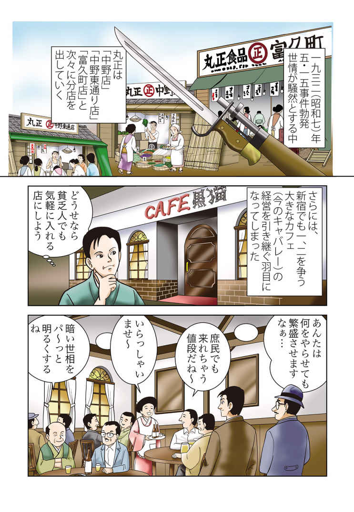
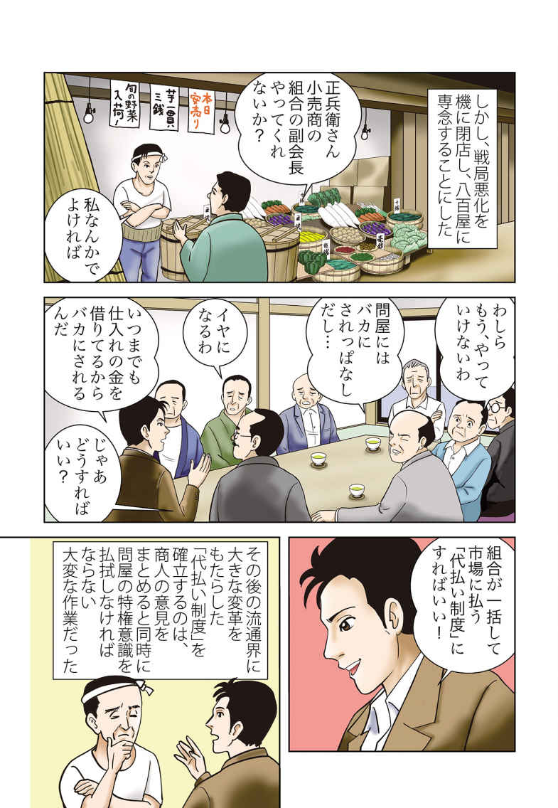
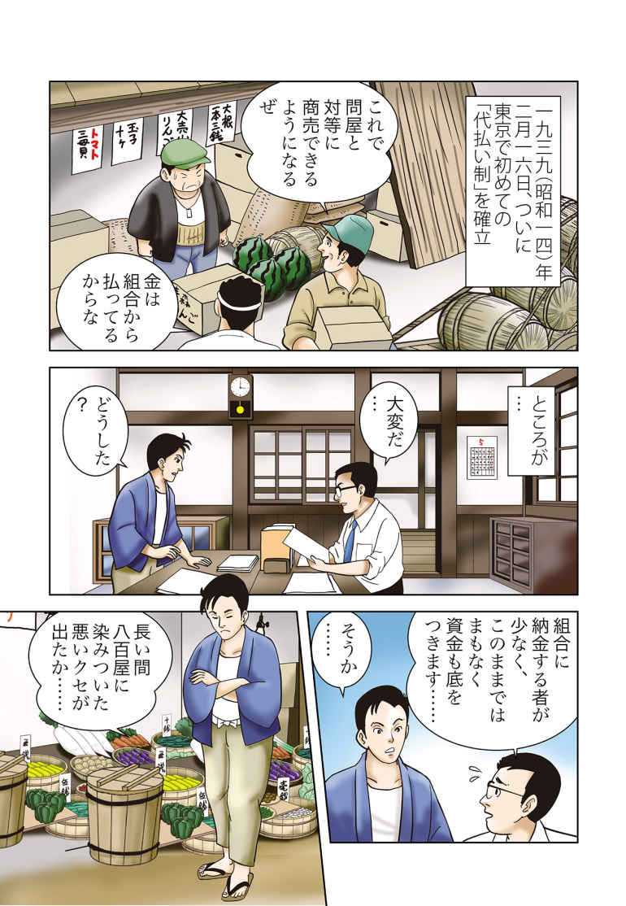
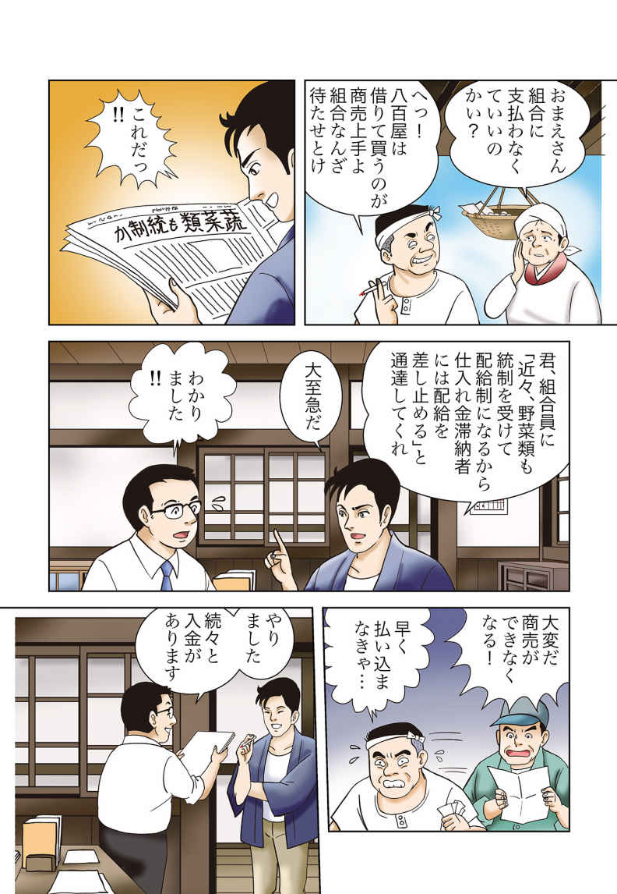
自分自身が成功を収めた後に、正兵衛が心を砕くようになったことは、八百屋という小売業の地位の向上だった。
八百屋の多くはいまだに貧しい生活を送っており、特に、八百屋と問屋（仲卸業）の関係はひどいもので、問屋は八百屋を自分たちの小間使い程度にしか考えていなかったのだ。八百屋がいてはじめて成り立つ問屋であるはずなのに、この地位の違いには納得がいかなかった。
その背景にあったのは、当時の八百屋の商売の仕方にあった。問屋から商品を仕入れる際、多くの八百屋は、問屋から資金を借りて仕入れを行なっていたのである。
この問題を解消するために、正兵衛たちが考えたのは、「代払い制度」だった。八百屋が問屋から商品を買ったその代金を、組合に払い込み、組合が一括して市場に支払い、そこから問屋に支払うというのである。
組合がきちんと支払うことで八百屋がお金を借りるという必要がなくなり、八百屋を問屋が見下すような風潮はなくなると考えたのである。
当時、東洋市場で仕入れをしていた小売商が集まって組織したのが、東洋連盟という組合だった。会員は一〇〇〇名近くおり、正兵衛は若いながらも東洋連盟で副会長を務めていた。
その東洋市場は、一九三七（昭和一二）年に解散し、新たに淀橋分場（中央市場）に引っ越すことになっていたが、この「代払い制度」を市場側が承認してくれない限り、淀橋分場へは移転しないと、組合側は主張をし続け、ごたごたが続いていたのである。
「代払い制度」を実施するためには、二つの壁を越えなければならなかった。
一つは、組合内部の反対派を説得することだった。
最大の壁は、大八百屋といわれる人たちだった。東洋連盟の中には、大八百屋といわれる者から一文商いのような弱小八百屋までいたのだが、「代払い制度」はいわば大八百屋が小商人を助けるようなものだと考えたのである。しかも、大八百屋にしてみれば、小商人といえどもライバルであるから潰れてしまったほうがいいと内心では密かに思っていたのである。
話し合いはなかなか進まず苦しんだが、我が国初の青果小売商組合をつくった大沢常太郎氏の応援を得て、何とか説得に成功した。
もう一つの壁は、市場であった。
「代払い制度」そのものについては、市場には反対する理由はなかったが、昔から行なわれてきた「歩戻し金制度」について、「代払い」をするからきちんと実施するようにという要求を、問屋は受け入れたくなかったのである。歩戻し金、つまり小売業者が問屋に支払った代金の一部を、手数料・謝礼などの名目で、支払者、つまり小売業者に戻すシステムが嫌だったのだ。
名目上は、二分の歩戻しをすることになっていたのだが、実際には、小売業者の仕入れ代金の納入が遅れたとか、仕入れの際に値切ったというような理由をつけて、小売業者に歩戻しをしない問屋が多かったのだ。実際に実施されていたのは、全体の二割程度に過ぎなかった。それを、すべてで実施するということになれば、問屋にしてみれば、かなりの痛手となるわけである。
さらにいえば、組合が「代払い」をするとなると、問屋がこれまで小僧のように扱ってきた小売業者の力が強まるということも、問屋にとってはおもしろくないことだった。
けれども、小売業者からいえば、本来払うべき金額をくすねた上に、小売業者を小僧のように扱ってきた問屋こそ、時代錯誤も甚だしいものなのだ。だからこそ、組合はこの点について妥協することはしなかった。
そのせいで、結局、二年間という長きにわたって、淀橋分場への移転は実現しなかった。いつでも営業できる状態になっていたにもかかわらず、開店休業状態が続いたのだ。正式に開業したのは、一九三九（昭和一四）年の二月一六日。もちろん、代払い制度と歩戻し金の要求は通った上での開業だった。
こうして、新しい市場・淀橋分場での業務が始まったわけであるが、新たに導入した代払い制度は、なかなか軌道に乗らなかった。
正兵衛自身、そんなにすんなりと軌道に乗るとは思っていなかったけれども、想像以上に難航した。
その原因は、小売業者である。八百屋に旧来より存在していた特殊な感覚だ。「八百屋は、金を借りて商品を買うのが、上手な商売人だ」という観念が強く残っていたために、代払いという新しい制度になっても、組合になかなか納金しなかったのである。
組合は当然、支払いを滞らせるわけにはいかない。支払いは確実に実行するのに、八百屋からの代金の支払は滞った状態が続くとなると、必然的にその財政は逼迫 していった。
何とかこの問題を克服しなければならなかったが、決め手となるうまい方法は見つからなかった。
周りの反対を押し切って、時間をかけて説得してたどり着いた新しい運営方法が、実施して間もないうちにもう資金切れとなり、破綻したということになれば、正兵衛たちの立つ瀬はなかった。
そんなある日、朗報が飛び込んできた。新聞にこんな言葉が出たのだ。
「蔬菜 類も統制か」
つまり、戦時下で統制が厳しくなる中で、野菜類も統制下に入るのではないかというのである。
正兵衛は、この一文でひらめいた。野菜類が統制を受け配給制度になるということは、配給する側に立つ組合の権限が強くなるということである。組合がノーと言えば野菜は届かない。
「仕入れ代金を滞納している小売業には配給を差し止める」と言えば、小売業者にとっては死活問題となるわけだ。
正兵衛は、この旨を記載した通知を、すぐに各小売業者に送付することを、職員に指示した。
そうすると、案の定、これまでなかなか納金しなかった小売業者たちが、配給停止を恐れて納金をしてくれるようになったのだ。溜まっていた古い借金まで少々の無理をして納めてくれた。
「まもなく貸出金はなくなりそうです！」
職員の弾んだ声に、正兵衛の胸には久しぶりの明るい光が差し込んだ。
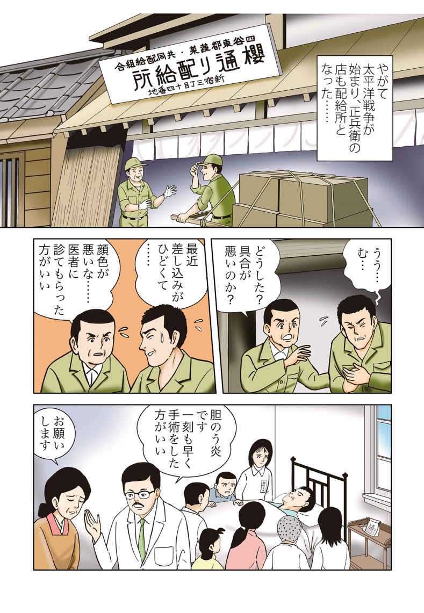
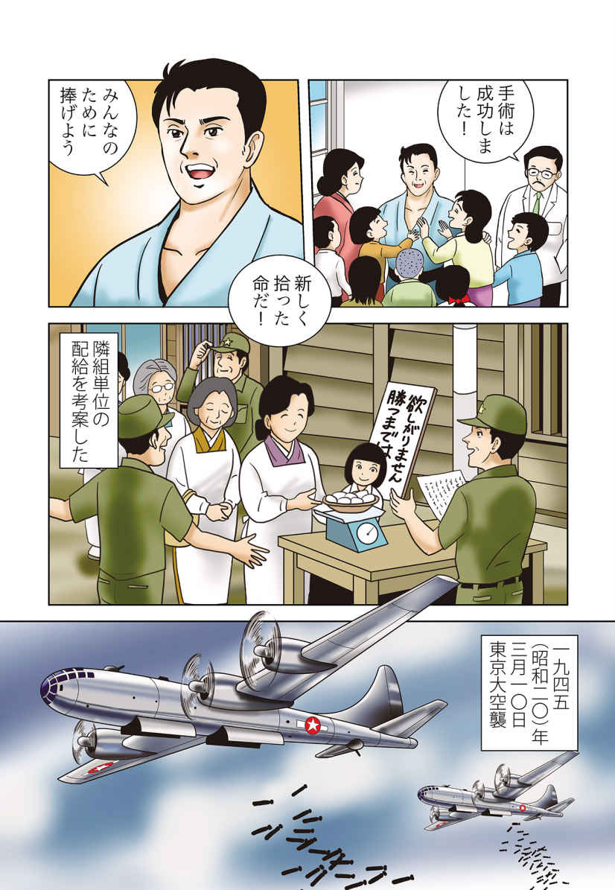
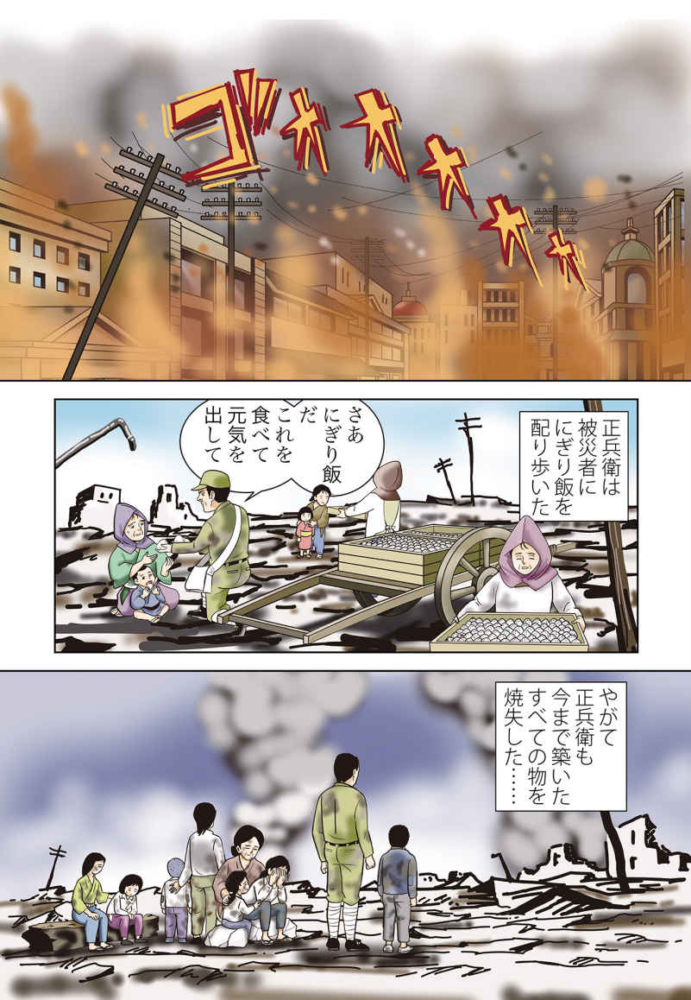
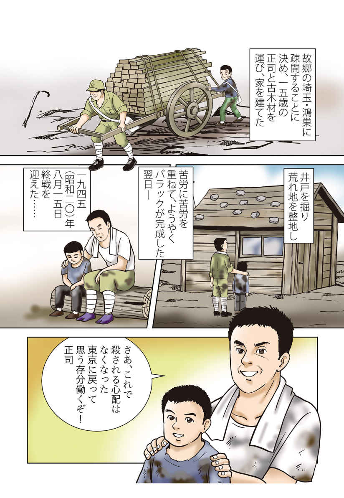
第二次世界大戦に突入した日本経済は、日に日に逼迫していった。働き手となるべき若い男性は戦地へ次々と送り込まれ、町には老人と子どもと女性だけが取り残された。
世の中のあらゆる生産活動は停滞し、物を作ろうにも資源や資材は枯渇していた。特に食料や衣料の不足は激しく、食料をどう確保するかということは、庶民の最大かつ喫緊 の課題であった。
食の重要な柱の一つである野菜もまた、配給制度の対象となった。そして八百屋は、野菜の配給所に変わったのである。
正兵衛は、淀橋分場の事務所に勤務する一方、自分の店舗での配給にも力を注がなければならず、すでに初老の域に手の届き始めた正兵衛にとっては、きつい日々の連続で、疲れがなかなか抜けなかった。
あまりの倦怠 感に不安を感じた正兵衛は、念のために病院を受診してみると、胆のう炎ということが発覚。手術による切除が必要な状況だった。今でこそ医療の進歩で死のリスクは低いものとなっているが、高度な医療技術がなかった当時としては、それは死と背中合わせの危険な手術であった。
正兵衛は、これまで無我夢中で働き、支店を六軒、貸家を三二軒持った他にも故郷には一万坪の土地を買って、やっと安定した生活を築きあげていたにもかかわらず、今ここで死んでしまっては、それらがすべて意味を失う。死ぬわけにはいかなかったのだ。
幸い、手術は成功した。体は健康を取り戻し、正兵衛は新たな生命を授けてもらったように感じた。
「拾った命なら、みんなのために捧げても惜しくない」と思った正兵衛は、その後さらに、組合の仕事に没頭していったのである。
最大の問題は、野菜の配給が円滑に進まなくなったことだった。農家も小売店も召集で人手不足となり、野菜は極端に出回らなくなった。
どこの八百屋も長蛇の列となり、炎天下や寒風吹きすさぶ中で長時間並ぶという事態は、東京都の大問題として取り上げられた。当時、四谷区の支部長だった正兵衛のもとには、打開策を考えるよう当局からの要請が入り、それに対して、隣組単位の配給を考え実施したところ、何とか行列はなくなった。
一九四五（昭和二〇）年、戦局は激しさを増し、三月一〇日にはＢ29 の焼夷弾 による無差別大爆撃が行なわれた。灯火管制で真っ暗な中、赤い炎が東京のあちこちから立ちのぼり、やがて紅蓮 の炎となって東京中を赤々と染め上げたのだ。
正兵衛が駆けつけた四谷警察署には、正兵衛が隊長を務めていた配給挺身隊の本部が置かれており、正兵衛はそこで非常用食料の米を用意させ、炊飯班に命じて握り飯を握らせた。焼け出された人々に握り飯を届け励まそうというのである。この握り飯運動は、一夜にして四谷全域に広がった。
その数、一三万個の握り飯が何十台ものリヤカーに山積みにされ、下町の焼け跡に運ばれた。
「握り飯を食べて元気を出してください」
温かな人間同士の励ましをあざ笑うかのように、アメリカの爆撃は続けられた。
その日の空襲も夜だった。ザーザーと雨のような音を立てながら降り注ぐ焼夷弾を前にして、日頃の防火訓練など役には立たない。あちこちから炎があがり、大きな建物が轟音を立てて崩れた。人々の泣き叫ぶ声が満ちていた。
この日の空襲で、正兵衛の財産は消失した。六軒の支店も三二軒の貸家も、本店と共に消失してしまった。さらには、その後に移り住んだ家や店も、再び戦火に見舞われて消えてしまった。
正兵衛の小さな子どもたちは学童疎開に、その他の子どもたちは正兵衛とともに暮らしていたが、幸い誰一人犠牲者は出ずにすんだ。けれども、空襲があるたびに逃げまどう子どもたちを見るにつけ、これ以上東京に一緒にとどまることは無理だと考えた正兵衛は、故郷に家を建てそこに子どもたちを疎開させることにした。
家を建てるには木材が必要だが、時代が時代だけにそんなものを手に入れられるはずがない。そこで目をつけたのが、戦災の拡大を防ぐために、政府が強制的に差し押さえた疎開をする家の木材を買い取って、それを故郷に運ぶことにしたのだ。けれども、鉄道は軍需物資以外の輸送は禁じられ、自動車はすべて徴用されていたため、残った手段はリヤカーしかなかった。
仕方なく、正兵衛は、息子の正司と二人で、リヤカーを使って古木材を埼玉県の鴻巣へと運ぶことにした。一日一往復、空襲の合間を見ての労作業だ。
鴻巣には、正兵衛が所有し長兄が小作している約一万坪の土地がある。家も立派なものを建ててあげた。木材の保管などは、快く受け入れてくれると思ったのだが、長兄はそうではなかった。
「お前、そんなものを持ちこんでどうするんだ」
「子どものために疎開する家を建てるんだよ」
「冗談言うな。そんな家を建てる土地なんかねぇよ」
恩をあだで返すような、血も涙もない返事だった。
それでも、正兵衛は、長兄の家から五〇ｍほど離れた桑畑に木材を運び保管した。
家が建てられるような平坦な土地にするには、桑畑を掘り返すしかない。正兵衛と正司は二人して、連日鍬 を振り続けた。正司の手のマメは潰れ、血が流れた。正兵衛は、幼い我が子にかける苦労が辛かった。
土地が整備されいざ家を建てるという段階になると、木材が足りないことがわかった。正司が再び東京から鴻巣までリヤカーで材木を運んだ。ある日の夕方のこと、正司が泣きそうな顔で遠くでリヤカーを引いている。見れば、正司は裸足だった。途中で靴が破れ、仕方なしに靴を捨ててきたのだという。あまりの不憫 さに正兵衛は正司をリヤカーに乗せると、自らリヤカーを引いた。こんな言葉が正兵衛の胸を突いて出た。
落ちぶれて 袖に涙のかかるとき
人の心の奥ぞ知られる
正兵衛は、いつか必ず、子どもたちのために家を建てることを誓った。
疎開のために必要なものがもう一つあった。水の確保である。当然、水道などない。井戸を掘るしかない。けれども、水が出るという保証はない。一か八かの賭けに出るように、正兵衛と正司は、穴を掘り始めた。
けれども赤土の大地からは掘れども掘れども水は出てこなかった。近所の者のこんな言葉が聞こえてきた。
「素人が井戸なんか掘れるものか」
それでも二人は掘り続けたのだが、水は一向に出る気配すらない。一〇ｍほど掘った時、さすがに諦めようと思った。何よりも精神的にも肉体的にも疲れ果てていた。
「正司、もう一ｍ掘ってみよう。それで出なかったら諦めよう」
残った体力を振り絞るようにしてさらに一ｍ掘ったけれども、水の気配は感じられなかった。もう諦めるしかない。
「畜生！」と叫んでスコップを穴につき立て抜こうとすると、グシャッとした感触があった。急いで掘り進めると、水が滲み出てきたのだ。
「水が出た、水が出た！」
正兵衛と正司の顔は、汗と涙と泥でグシャグシャだった。
六畳と四畳半の二間の簡素な家に焼けトタンで屋根を葺 いたのは八月一四日だった。翌朝、甥がやってきて、「今日の昼、天皇さまの重大放送があるんだってことだよ。一緒にラジオを聴こう」と、誘いに来てくれた。
「堪え難きを堪え、忍び難きを忍び」
戦争に負けたのだ。正兵衛は、泣いた。泣くだけ泣くと不思議にも気が晴れ、こう思った。
「家族が無事だっただけでも幸いだ。家なんか、働けばまた建てられる。私はもう一度、東京で勝負する」
正兵衛は長兄に、「家も荷物も自由にすればいい」と言うと、長兄は、「そりゃあすまねえな。タダじゃ悪いから、カボチャとトウモロコシの種二升と交換しようや」と言いながら、目の前に袋をよこした。正兵衛は、怒りに震えながらもじっとこらえてこう言った。
「兄貴が一年かかって儲ける額と、俺の一カ月の儲けとが同じようになったら、また顔を見せるぜ」
正兵衛、四八歳。すでに若くはなかったが、二年前の大病で失ったかもしれない命がまだあることで、怖いものは何もないと思った。そして、どんな苦労が待ち構えていようとも、もう一度懸命に働き抜いて丸正を再起させ、大きく発展させてみせると、強く深く決意したのである。
【著者】
飯塚司郎（いいづか・しろう）
丸正チェーン商事株式会社 代表取締役社長
１９７２（昭和47 ）年、丸正チェーン商事に入社。問題の多かった鮮魚部を立て直し、急きょ抜擢された青果部でも無難にこなすことで力をつける。入社５年目で四谷総本店の改装を任される。
１９８９（平成元）年、丸正チェーン商事株式会社代表取締役社長に就任。
２０１９年、丸正チェーン商事株式会社は創業１００年を迎える。
丸く正しい商いを
第１巻 夢を諦めるな
著者 飯塚司郎
(C) 2018 Marusho Inc. All Rights Reserved.
２０１８年８月９日 電子版発行
イラスト 長野亨
発行 ダイヤモンド・ビジネス企画
〒１０４－００２８
東京都中央区八重洲２－７－７ 八重洲旭ビル２階
電話 ０３－５２０５－７０７６（代表）
制作 中央精版印刷
本電子書籍の全部または一部を無断で複製（コピー）、転載、改ざん、公衆送信すること、および有償・無償にかかわらず本データを第三者に譲渡することを禁じます。
個人利用の目的以外での複製などの違法行為、もしくは第三者への譲渡をしますと著作権法、その他関連法によって処罰されます。